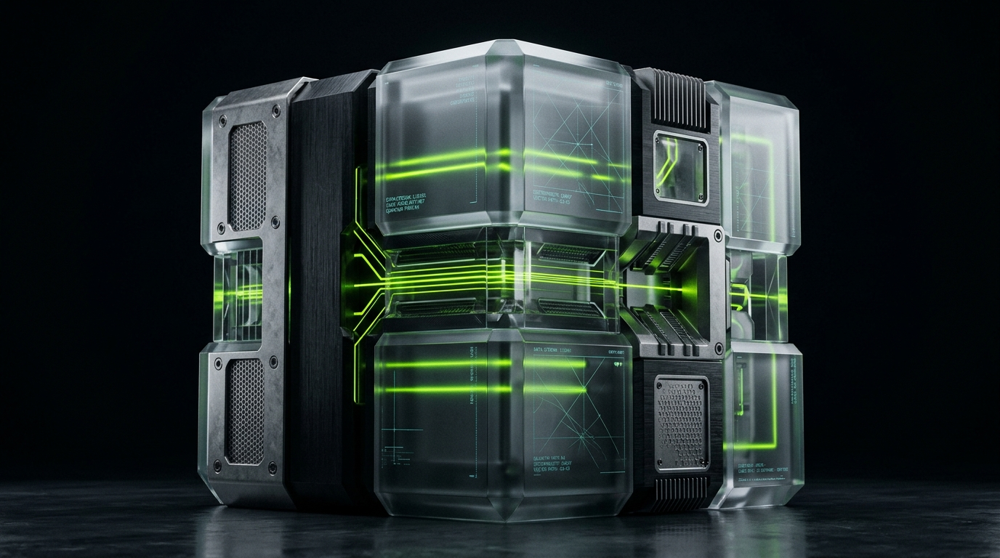

Intelligence
Should Flow.
Not Hallucinate.
Most corporate AI initiatives stall in the "wrapper trap"—paying monthly per-seat SaaS tolls for brittle chatbots that hallucinate in front of clients and leak internal IP. NEER architects, builds, and deploys private, deterministic, and sovereign AI infrastructure directly inside your enterprise perimeter. From autonomous customer concierges to predictive operational modeling, we replace fragile human bottlenecks with self-correcting agentic workflows.

Zero public data training. Zero vendor lock-in. 100% client code ownership.
Why Generic AI Wrappers
Fail Ambitious Enterprises.
Most businesses rush to adopt AI by bolting 14 different SaaS subscriptions onto broken operational foundations. The result is compounding organizational drag:
Fragile Disjointed Stacks
Paying monthly per-seat tolls for closed-source SaaS wrappers that break every time an upstream provider changes their API schema. You build equity for vendors, not yourself.
Stochastic Inconsistency
Probabilistic language models left unconstrained hallucinate numbers, invent non-existent company policies, and erode customer trust in live production environments.
Public Training Exposure
Routing sensitive financial records, customer PII, and trade secrets through public third-party endpoints where your proprietary data can leak into foundation training sets.
The Four Currents of
Engineered Autonomy.
We architect production-grade, secure, and private AI systems tailored to your specific commercial topology:

Autonomous Client Intelligence
// Multimodal WhatsApp & Web Concierges
Deploying deterministic concierges that answer complex product queries, qualify commercial intent, and schedule consultations with zero hallucinations. Grounded in your enterprise vector store.
Agentic Operational Workflows
// LangGraph Multi-Agent Orchestration
Autonomous swarms that triage customer tickets, extract and validate structured invoices, draft legal documentation, and sync CRM data with human-in-the-loop verification gates.
Predictive Commercial Modeling
// Demand Forecasting & Dynamic Pricing
Fine-tuned regression pipelines running over your historical enterprise transaction records to predict inventory stockouts, client churn likelihood, and optimal price elasticity.
Private Sovereign Infrastructure
// Air-Gapped VPC & On-Premise Weights
Complete deployment inside your dedicated AWS, GCP, or on-premise Kubernetes cluster. Zero third-party data logging. You own 100% of fine-tuned weights, embeddings, and code.
Shipped Blueprints:
Real Enterprise Evidence.
We don’t pitch theoretical research whitepapers. We engineer, deploy, and monitor production systems operating inside complex commercial environments:
AXIS Solution: Autonomous Fleet Triage

AXIS manages thousands of distributed industrial tracking devices. Telemetry anomalies and field error tickets required manual engineering triage, creating a 14-hour diagnostic backlog that threatened client SLA commitments.
We engineered an autonomous LangGraph diagnostic swarm connected to the device telemetry pipeline. The agent correlates error codes against hardware historical logs, isolates physical sensor failures versus network latency, and automatically triggers automated dispatch routines.
YourDSA: Instant Loan Underwriting
YourDSA matches commercial loan applicants with 40+ lending institutions. Reviewing multi-page bank statements, GST filings, and credit logs took 48 hours per commercial applicant, leading to high drop-off rates and distributor fatigue.
We engineered a private multimodal document extraction agent with strict JSON schema verification. The system parses unstructured bank PDFs, extracts 24 cash-flow ratios, verifies tax compliance, and generates a lender-matched underwriting brief in under 9 minutes.

How We Protect Your IP:
The Three Security Principles.
In our Dashavatara philosophy, Rama represents ethical order and inviolable boundaries. In artificial intelligence, security and governance are the architectural bedrock:
Air-Gapped Data Privacy
// Zero Public Training
Your proprietary business data, customer records, and internal documents are never sent to train public foundation models. We deploy via enterprise zero-data-retention APIs or private on-premise/VPC instances with end-to-end encryption.
Deterministic Guardrails
// Zero Hallucinations
Every agent is bounded by semantic routers and JSON schema output validation. If an AI agent cannot cite a verified document chunk from your database with >95% confidence, it triggers a deterministic fallback routine.
Sovereign Asset Ownership
// Zero Vendor Lock-In
You own 100% of the intellectual property: custom prompt graphs, fine-tuned weights, embeddings, and deployment infrastructure code. If our engagement ends, your AI infrastructure continues to operate uninterrupted.
From Topology Map
to Live Enterprise Production.
We operate in high-velocity, milestone-driven sprints designed to ship working code within 42 days:
Topology Mapping
Auditing data schemas, API endpoints, latency bottlenecks, and defining deterministic guardrail requirements.
Pipeline Architecture
Building private vector stores, agentic routing graphs, schema validators, and air-gapped staging environments.
Red-Teaming & QA
Adversarial stress-testing, hallucination probe suites, latency optimization, and human verification gate tests.
Production Handover
Full deployment to client VPC, telemetry observability dashboards, team training, and sovereign IP transfer.
Stop Subscribing to SaaS Wrappers.
Own Your Intelligence.
Schedule a confidential 45-minute technical audit with our AI Systems Architects to diagnose where deterministic automation can eliminate enterprise drag.